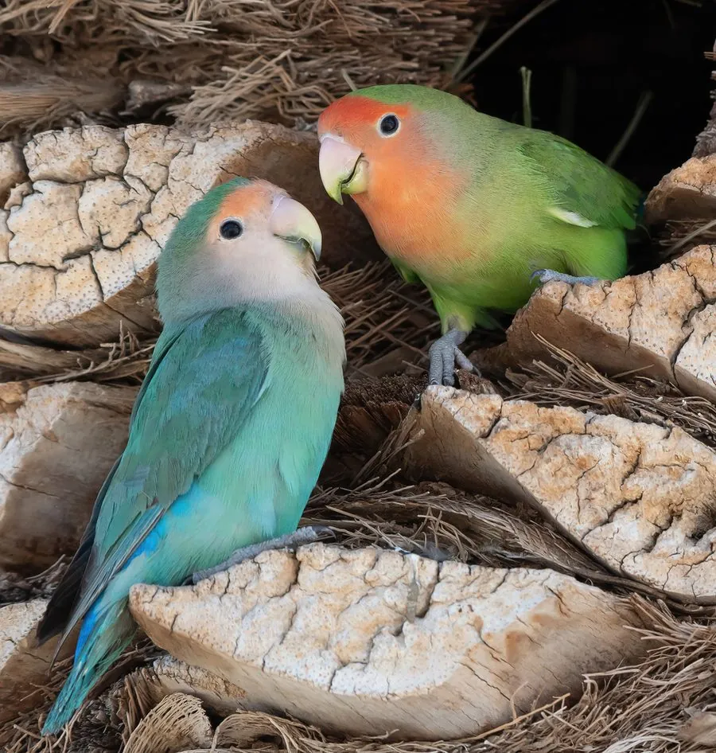

鸟类 · 动物界
桃脸牡丹鹦鹉 Agapornis roseicollis

小型短尾鹦鹉，通体绿色，脸部桃红、腰部蓝色，喙呈角质色。原产非洲西南部干旱地区，因伴侣形影不离而得名“情侣鹦鹉”。
- 分类
- 门脊索动物门纲鸟纲目鹦形目科鹦鹉科属牡丹鹦鹉属
- 栖息环境
- 非洲西南部干旱稀树草原、河岸灌丛、旱谷与农田，偏好近水且有岩缝的环境。
- 地理分布
- 非洲西南部，包括纳米比亚、博茨瓦纳、南非西北部与安哥拉南部。
- 保护级别
- IUCN 红色名录列为无危（LC）；列入 CITES 附录二，国际贸易受许可管理。
物种志
桃脸牡丹鹦鹉体长约十五至十八厘米，体重四十五至六十五克，是牡丹鹦鹉中体型较大的一种。通体草绿色，前额、脸颊和喉部呈桃红色，腰部与尾上覆羽蓝色，尾羽短而圆。喙角质色，虹膜深褐，脚灰色。雌雄外形相似，雌鸟体型略大、头部较宽，需通过行为或 DNA 鉴定性别。
它原产于非洲西南部的纳米比亚、博茨瓦纳与南非干旱地区，栖息于稀树草原、河岸灌丛与农田，常成小群活动，取食种子、谷物和嫩芽。繁殖期在岩石缝隙或树洞中营巢，雌鸟会把撕碎的树皮条、草茎塞进腰羽间带回巢中，每窝产卵四至六枚。桃脸牡丹鹦鹉配偶关系紧密，常互相理羽、依偎，是“情侣鹦鹉”名称的由来。它被大量人工繁殖为宠物，野外种群稳定，列入 CITES 附录二。
形态与习性
- 体长15–18 厘米
- 体重45–65 克
- 食性种子、谷物与嫩芽
- 繁殖岩缝或树洞营巢，每窝 4–6 枚
- 分布非洲西南部干旱地区
- 保护级别IUCN 无危；CITES 附录二
趣味知识
- 雌鸟会把树皮条塞进腰羽间，像夹着建筑材料飞回巢。
- 配偶之间经常互相理羽，形影不离。
- 是最早被人工繁殖的牡丹鹦鹉之一。